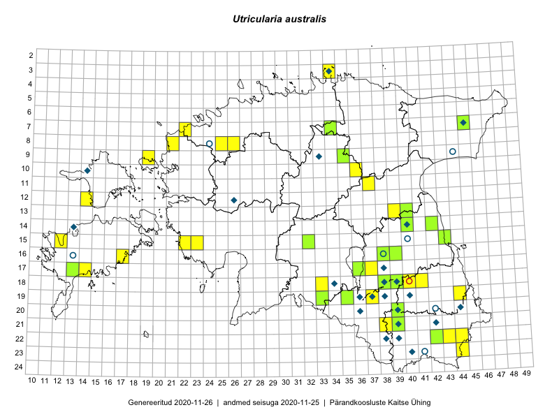

Utricularia australis — lõuna-vesihernes
Lentibulariaceae :: Utricularia australis R.Br. (76)

Kaart põhineb 76 kirjel:
vaatlusi 23
herbaareksemplare 53
Taime kaasaegsed ja ajaloolised leiukohad asuvad 51 ruudus.
Tingmärgid ja ruutude arvud periooditi (U1 / V2 )
█ 2006–2020 (30/–)
◆/◇ 1971–2005 (20/2)
○ 1921–1970 (7/1)
+ kuni 1920 (0/0)
× hävinud (–/0)
? kaheldav (–/0)
| Ruut | Leidja(d) | Leiuaeg | Kirje |
|---|---|---|---|
| 09-35 | Kadi Palmik, Helle Mäemets | 2015-07-21 | ruut/ala: Utricularia australis R.Br. |
| 18-41 | Kadi Palmik, Helle Mäemets | 2015-08-13 | ruut/ala: Utricularia australis R.Br. |
| 10-36 | Kadi Palmik, Helle Mäemets | 2015-07-21 | ruut/ala: Utricularia australis R.Br. |
| 07-34 | Jana-Maria Habicht, Ester Valdvee | 2015-07-20 | ruut/ala: Utricularia australis R.Br. |
| 15-32 | Toomas Kukk, Liina Oja | 2016-07-21 | ruut/ala: Utricularia australis R.Br. |
| 08-21 | Tiit Hallikma, Tõnu Ploompuu | 2016-07-07 | ruut/ala: Utricularia australis R.Br. |
| 14-42 | Kadi Palmik, Helle Mäemets | 2015-07-24 | ruut/ala: Utricularia australis R.Br. |
| 16-39 | Kadi Palmik, Helle Mäemets | 2015-07-22 | ruut/ala: Utricularia australis R.Br. |
| 22-44 | Helle Mäemets, Kadi Palmik | 2017-08-01 | ruut/ala: Utricularia australis R.Br. |
| 19-44 | Helle Mäemets, Kadi Palmik | 2017-08-02 | ruut/ala: Utricularia australis R.Br. |
| 08-26 | Helle Mäemets, Kadi Palmik | 2017-07-16 | ruut/ala: Utricularia australis R.Br. |
| 22-43 | Helle Mäemets, Kadi Palmik | 2017-08-01 | ruut/ala: Utricularia australis R.Br. |
| 07-22 | Helle Mäemets, Kadi Palmik | 2017-07-15 | ruut/ala: Utricularia australis R.Br. |
| 21-38 | Helle Mäemets, Kadi Palmik | 2017-07-07 | ruut/ala: Utricularia australis R.Br. |
| 18-40 | Helle Mäemets, Kadi Palmik | 2017-07-05 | ruut/ala: Utricularia australis R.Br. |
| 18-40 | Helle Mäemets, Kadi Palmik | 2017-07-05 | ruut/ala: Utricularia australis R.Br. |
| 21-38 | Helle Mäemets, Kadi Palmik | 2017-07-07 | ruut/ala: Utricularia australis R.Br. |
| 19-37 | Helle Mäemets, Kadi Palmik | 2017-07-07 | ruut/ala: Utricularia australis R.Br. |
| 17-37 | Helle Mäemets | 2017-07-01 | ruut/ala: Utricularia australis R.Br. |
| 11-37 | Helle Mäemets | 2018-07-11 | ruut/ala: Utricularia australis R.Br. |
| 15-12 | Helle Mäemets | 2019-07-03 | ruut/ala: Utricularia australis R.Br. |
| 11-37 | Helle Mäemets, Kadi Palmik | 2018-07-11 | ruut/ala: Utricularia australis R.Br. |
| 15-23 | Helle Mäemets, Kadi Palmik | 2018-08-30 | ruut/ala: Utricularia australis R.Br. |
| 16-13 | Gustav Vilbaste | 1924-06-27 | TAA0085544: Utricularia australis R.Br. |
| 15-40 | M. Kask | 1967-06-15 | TAA0085545: Utricularia australis R.Br. |
| 03-34 | Linda Viljasoo | 1980-07-17 | TAA0085546: Utricularia australis R.Br. |
| 12-26 | Linda Viljasoo | 1976-08-12 | TAA0085547: Utricularia australis R.Br. |
| 12-26 | Linda Viljasoo | 1976-08-12 | TAA0085548: Utricularia australis R.Br. |
| 16-38 | Gustav Vilbaste | 1928-08-19 | TAA0085549: Utricularia australis R.Br. |
| 08-24 | Vilma Kuusk, M. Lätt | 1960-08-04 | TAA0085550: Utricularia australis R.Br. |
| 07-34 | Jana-Maria Habicht | 2015-07-20 | TAM0118086: Utricularia australis R.Br. |
| 15-32 | Toomas Kukk, Liina Oja | 2016-07-21 | TAA0138165: Utricularia australis R.Br. |
| 09-35 | Tiit Hallikma, Toomas Kukk | 2016-07-25 | TAA0134449: Utricularia australis R.Br. |
| 14-42 | Helle Mäemets, Kadi Palmik | 2015-07-24 | TAA0143243: Utricularia australis R.Br. |
| 14-42 | Helle Mäemets, Kadi Palmik | 2015-07-24 | TAA0143244: Utricularia australis R.Br. |
| 18-34 | Helle Mäemets | 2004-07-19 | TAA2001823: Utricularia australis R.Br. |
| 20-39 | Helle Mäemets | 2007-07-16 | TAA2001841: Utricularia australis R.Br. |
| 16-38 | Helle Mäemets | 2007-07-18 | TAA2001846: Utricularia australis R.Br. |
| 10-14 | Helle Mäemets | 2004-08-20 | TAA2002236: Utricularia australis R.Br. |
| 18-39 | Aime Mäemets | 1989-06-29 | TAA2002843: Utricularia australis R.Br. |
| 13-40 | Helle Mäemets | 2008-08-18 | TAA2002893: Utricularia australis R.Br. |
| 19-35 | Helle Mäemets | 2009-07-06 | TAA2003117: Utricularia australis R.Br. |
| 22-39 | Helle Mäemets | 2001-07-27 | TAA2003286: Utricularia australis R.Br. |
| 10-14 | Helle Mäemets | 2004-08-20 | TAA2003531: Utricularia australis R.Br. |
| 21-39 | Aime Mäemets | 1984-07-07 | TAA2003739: Utricularia australis R.Br. |
| 20-36 | Aime Mäemets | 1985-09-07 | TAA2003740: Utricularia australis R.Br. |
| 17-38 | Aime Mäemets | 1984-07-02 | TAA2003741: Utricularia australis R.Br. |
| 14-40 | Aime Mäemets | 1975-08-19 | TAA2003743: Utricularia australis R.Br. |
| 19-36 | Aime Mäemets | 1973-08-20 | TAA2003746: Utricularia australis R.Br. |
| 07-45 | Helle Mäemets | 2001-07-12 | TAA2003753: Utricularia australis R.Br. |
| 22-39 | Helle Mäemets | 2001-07-05 | TAA2003754.A: Utricularia australis R.Br. |
| 17-38 | Aime Mäemets | 1991-07-02 | TAA2003755: Utricularia australis R.Br. |
| 17-38 | Helle Mäemets | 2001-07-23 | TAA2003756: Utricularia australis R.Br. |
| 18-38 | Aime Mäemets | 1991-07-16 | TAA2003759: Utricularia australis R.Br. |
| 18-39 | Helle Mäemets | 2007-07-10 | TAA2003760: Utricularia australis R.Br. |
| 19-37 | Helle Mäemets | 2004-07-09 | TAA2003763: Utricularia australis R.Br. |
| 21-42 | Helle Mäemets | 2003-07-02 | TAA2003768: Utricularia australis R.Br. |
| 20-39 | Aime Mäemets | 2007-06-26 | TAA2003773: Utricularia australis R.Br. |
| 21-39 | Gerda Ratasepp | 2008-07-07 | TAA2003779: Utricularia australis R.Br. |
| 19-33 | Katrit Karus, Gerda Ratasepp | 2008-08-06 | TAA2003788: Utricularia australis R.Br. |
| 22-38 | Aime Mäemets | 1974-07-14 | TAA2003804: Utricularia australis R.Br. |
| 21-42 | Aime Mäemets | 1981-07-07 | TAA2003807: Utricularia australis R.Br. |
| 20-42 | Aime Mäemets | 1961-08-10 | TAA2003809: Utricularia australis R.Br. |
| 23-41 | Aime Mäemets | 1970-07-08 | TAA2003816: Utricularia australis R.Br. |
| 09-33 | Aime Mäemets | 1972-07-08 | TAA2003817: Utricularia australis R.Br. |
| 18-38 | Aime Mäemets | 1972-07-19 | TAA2003819: Utricularia australis R.Br. |
| 20-39 | Aime Mäemets | 1982-07-28 | TAA2003820: Utricularia australis R.Br. |
| 18-39 | Aime Mäemets | 1984-07-19 | TAA2003828: Utricularia australis R.Br. |
| 19-38 | Aime Mäemets | 1984-07-17 | TAA2003830: Utricularia australis R.Br. |
| 21-39 | Aime Mäemets | 1984-07-04 | TAA2003832: Utricularia australis R.Br. |
| 18-39 | Aime Mäemets | 1982-07-27 | TAA2003833: Utricularia australis R.Br. |
| 20-44 | Aime Mäemets | 1973-07-22 | TAA2003834: Utricularia australis R.Br. |
| 09-44 | Aime Mäemets | 1970-07-17 | TAA2003868: Utricularia australis R.Br. |
| 14-40 | Katrit Karus | 2011-07-06 | TAA2004044: Utricularia australis R.Br. |
| 15-43 | Reet Laugaste | 2011-08-03 | TAA2004049: Utricularia australis R.Br. |
| 22-42 | Helle Mäemets | 2011-07-21 | TAA2004060: Utricularia australis R.Br. |
Ruutude arv uue atlase andmekogu järgi. Muuhulgas arvestab vanemat herbaariumi, 2005. aasta atlase välitöölehtedelt uuesti digitaliseeritud andmeid jne. Uue atlase andmekogust pärinevad andmed on kaardile kantud siniste sümbolitega.↩︎
Ruutude arv 2005. aasta atlase (Kukk, T., Kull, T., Eesti taimede levikuatlas. Eesti Maaülikool, Põllumajandus- ja Keskkonnainstituut, Tartu, 2005) järgi. Andmeallikana on kasutatud levik.exe programmi, kus igas ruudus on registreeritud vaid uusim leid. Seetõttu on vanemate perioodide kohta andmed puudulikud. Kasutatud levik.exe andmestikus leidub mõningaid kõrvalekaldeid atlase trükis ilmunud versioonist, sagedamini tarnade ja käpaliste seas. Lisaks leidub selles andmestikus valik liike (peamiselt väheste leidudega tulnuktaimed), mille kaarte trükis ei avaldatud. Vana atlase andmed ruutudest, milles ei ole uue atlase andmekogus leide enne 2006. aastat, on kaardil esitatud punaste sümbolitega. Vana atlase andmetel hävinud ja kaheldavaid leiukohti pole hilisemate (taas)leidude põhjal korrigeeritud.↩︎